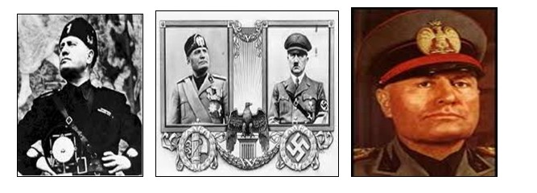

“Pentru fascism, totul este în stat şi nimic uman, nimic spiritual nu există şi nu are valoare în afara statului. În aceste sens, fascismul este totalitar. În afara statului nu există nici indivizi, nici grupuri. De aceea fascismul se opune socialismului, care accentuează mişcările politice ale luptei de clasă şi ignoră unitatea statului care fundamentează clasele sociale pe o singură realitate economică şi morală. Şi într-o manieră omoloagă, fascismul se opune sindicalismului.”

Pe baza textului şi a imaginilor (inserează imaginile în pagină când folosești versiunea offline), răspundeţi la următoarele cerinţe:
Redactați un text corect din punct de vedere istoric pornind de la termenii următori:
Karl Marx, Lenin, Stalin, revoluţie, dictatură, gulag, autodeterminare, bolşevici, URSS, comunism, Armata Roşie, nomenclatura, Marea Teroare
Demonstrați adevărul sau falsitatea afirmațiilor — completați coloana cu Adevărat/Fals și argument scurt.
Completați căsuțele alăturate imaginii pentru realizări (stânga) și greșeli (dreapta).
Identificați cei mai celebri criminali din caricatură și explicați de ce Hitler și Stalin figurează printre ei.
Realizaţi un eseu de aproximativ o pagină.